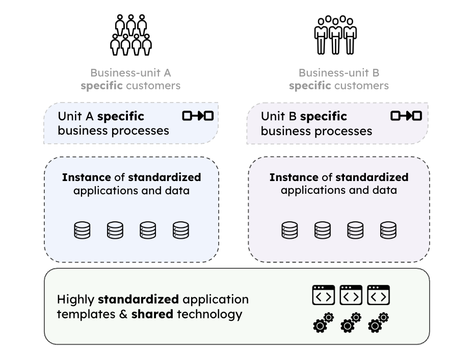

Enterprise Architecture as Strategy

IN THIS SECTION, YOU WILL: Learn that the relationship between business strategy and IT architecture is dynamic and requires continuous realignment, leveraging different operating models, flexibility strategies, and IT maturity stages to maximize efficiency, agility, and strategic value.
KEY POINTS:
- Business Operating Models: Organizations can structure their IT and business processes around four models—Diversification, Coordination, Replication, and Unification—depending on their need for standardization and integration.
- Global vs. Local Flexibility: Companies must balance global efficiency with local adaptability by implementing modular architectures and governance structures that support both.
- Stages of IT and Strategy Alignment: Organizations evolve from business silos (fragmented systems) to business modularity (strategic agility), with increasing levels of IT-business integration.
- IT’s Strategic Role: IT architecture serves as a key enabler for business execution, operational efficiency, and innovation, requiring alignment with the company’s operating model and strategic goals.
- Evolving IT Maturity: Progressing through IT maturity stages demands investment in technology, governance, and cultural shifts, ensuring seamless integration between business and IT functions.
The relationship between IT and business is inherently dynamic, where business needs shape IT solutions, and technological advancements influence strategic opportunities. New technology also demands a shift in management approaches, as traditional methods may not meet the unique demands of emerging technologies. Effective alignment requires integrating processes with systems, adapting workflows to leverage technology, and fostering collaboration between business leaders and IT teams. As both domains evolve, continuous realignment ensures agility, helping organizations remain competitive and maximize the mutual value of business and IT.
In business strategy and IT architecture, I often draw inspiration from Enterprise Architecture as Strategy: Creating a Foundation for Business Execution by Jeanne W. Ross, Peter Weill, and David C. Robertson.
I apply several core concepts from these works to shape my understanding of the interplay between business strategy and IT architecture:
-
Business Operating Models define how an organization structures its processes and systems to deliver value. These models include Diversification, where units operate autonomously in distinct markets; Coordination, where units share data and resources to enhance collaboration; Replication, with independent units using standardized systems; and Unification, where tightly integrated processes ensure efficiency and strategic alignment.
-
Global vs. Local Business Flexibility highlights the tension between centralized control and decentralized agility. Global flexibility enables enterprise-wide responsiveness to change, while local flexibility empowers units to address specific regional or functional needs. Striking the right balance ensures adaptability without fragmentation.
-
Stages of IT and Strategy Alignment describe the evolution of IT’s role in strategic execution, moving from isolated systems to fully integrated, strategic platforms. These stages include business silos (low integration), standardized technology (shared platforms, fragmented processes), optimized core (aligned and standardized systems), and business modularity, which promotes innovation through reusable, flexible components.
Together, these concepts form a comprehensive framework for understanding how IT architecture enables strategic business execution and drives enterprise-level transformation.
Four Types of Business Operating Models
The Operating Model is a core concept in Enterprise Architecture as Strategy, representing how an organization structures its business processes and systems to deliver value. It determines the degree of business process standardization (consistency) and integration (information sharing) across business units. The book introduces the concept of the Operating Model, which defines the necessary level of business process standardization and integration.
Figure 1: Four types of operating models: diversification (low integration, low standardization), coordination (high integration, low standardization), replication (low integration, high standardization), and unification (high integration, high standardization).
There are four types of operating models (Figure 1):
- Diversification: Low integration, low standardization.
- Coordination: High integration, low standardization.
- Replication: Low integration, high standardization.
- Unification: High integration, high standardization.
Diversification Model
The Diversification Model features low integration and low standardization, allowing business units to operate independently. This approach targets specific markets or customer segments with minimal need for sharing data or processes.
Pros:
- Flexibility and Innovation: The model promotes agility at the unit level, facilitating quick responses to market-specific demands.
- Localized Focus: Each unit can tailor its strategies and operations to effectively serve its unique markets or products.
- Autonomy: Business units prioritize independence, which can lead to specialized expertise and localized innovation.
Cons:
- Missed Synergies: The independent operation of business units often results in missed opportunities for cost savings and collaboration.
- Economies of Scale: Difficulty in achieving economies of scale due to the lack of integration among units.
- Increased Complexity: If integration becomes necessary later, it may lead to challenges given the autonomous nature of the business units.
This model is particularly suitable for holding companies or conglomerates, where operational overlap is limited and strategic focus varies among units.
 Figure 2: A high-level core diagram of the diversification operating model.
Figure 2: A high-level core diagram of the diversification operating model.
In the Diversification Operating Model, where low integration and low standardization are key characteristics, the IT architecture and the work of IT architects must align with the model’s emphasis on autonomy, flexibility, and localized innovation (Figure 2). Here’s a typical breakdown:
Federated or Decentralized IT Architecture
- Each business unit (BU) maintains its own IT systems, infrastructure, and applications.
- There is no centralized IT backbone; instead, units choose solutions that best fit their specific needs.
- Integration between units is minimal or non-existent.
Independent Technology Stacks
- Different BUs may use different vendors, platforms (e.g., AWS in one BU, Azure in another), and ERP systems.
- Custom-built or best-of-breed systems tailored to the unit’s industry or market.
Minimal Shared Services
- Little to no shared databases, CRM, or ERP systems.
- Exceptions might be for corporate-level compliance or financial reporting systems.
Focus on API Gateways or Minimal Interfacing
- If any communication is needed between units or with headquarters, lightweight APIs or integration layers may be used.
High Emphasis on Security and Governance at Unit Level
- Security is managed locally with standards possibly guided but not enforced by corporate IT.
Solution Architecture at the BU Level
- Architects work within individual business units, focusing on designing localized solutions that align with BU goals.
- Heavy involvement in vendor selection, customization, and integration within the unit.
Enterprise Architecture (EA) Plays a Loose Governance Role
- EA provides guiding principles but does not enforce strict alignment across units.
- May define broad security, compliance, and interoperability standards if needed.
Focus on Enabling Agility and Autonomy
- Architects prioritize fast deployment cycles, agile delivery methods, and flexibility in tech choice.
- Responsible for building architecture that supports fast innovation and rapid response to market needs.
Limited Involvement in Cross-Unit Standardization
- Minimal focus on system consolidation or enterprise-wide standardization.
- Instead, architects help manage technical debt and complexity within their own units.
Strategic Evaluation for Integration Opportunities (If Needed)
- Occasionally, architects may evaluate potential integration points (e.g., common analytics layer) to balance autonomy with potential synergies.
| Aspect | Characteristic |
|---|---|
| IT Architecture Style | Decentralized / Federated |
| Technology Choices | Independent per BU |
| Integration Level | Minimal |
| Data Sharing | Very limited or none |
| IT Architect Focus | BU-specific solutions, flexibility, innovation |
| EA Role | Loose oversight, optional guidelines |
| Key Challenges | Managing complexity, avoiding duplicated efforts, ensuring security compliance |
Coordination Model
The Coordination Model is characterized by high integration and low standardization, allowing business units to operate independently while collaborating through shared data and resources (Figure 3). This approach is particularly effective in organizations with distinct units, such as healthcare systems, where hospitals, clinics, and pharmacies work together using shared patient records. It is also applicable in global supply chains, where inventory and demand data are exchanged across geographically dispersed warehouses and suppliers.

Pros:
-
Enhanced Collaboration: The model prioritizes collaboration, facilitating efficient access and exchange of critical information across different parts of the organization.
-
Informed Decision-Making: By enabling access to shared data, it supports informed decision-making, allowing business units to leverage insights from various sources.
-
Fosters Innovation: The emphasis on collaboration encourages innovation at the individual business unit level without enforcing rigid standardization, allowing for tailored approaches.
-
Flexibility: Business units can operate independently, adapting their processes to meet specific needs while still benefiting from shared resources.
Cons:
-
Complexity of Integration: Managing the integration of diverse systems and processes can be challenging, particularly when dealing with varied technologies and data formats.
-
Dependence on Technology: The model requires robust integration technologies and governance mechanisms to maintain cohesion, which can lead to increased costs and resource allocation.
-
Governance Challenges: Establishing effective governance structures to oversee data sharing and integration can be complex and may require continuous adjustments.
In summary, while the Coordination Model offers significant advantages in enabling collaboration and innovation, it also poses challenges related to system integration and governance that organizations must address to ensure successful implementation.
 Figure 3: A high-level core diagram of the coordination operating model.
Figure 3: A high-level core diagram of the coordination operating model.
The Coordination Operating Model, which emphasizes high integration and low standardization across independent business units, leads to several requirements for IT architecture and the work of IT architects:
Federated Architecture with Strong Integration Backbone
- Business units maintain independent applications and processes but share key data through integration platforms (e.g., patient records, inventory data).
- While there is no enforced process standardization, data consistency and availability across units are essential.
Integration-Centric Infrastructure
- Centralized or distributed integration platforms (e.g., ESB, API gateways, iPaaS) facilitate secure, real-time data exchange.
- There is a focus on middleware and interoperability standards (e.g., HL7 in healthcare, EDI in supply chains).
Shared Data Repositories
- Shared master data (e.g., customer, patient, product, supplier records) require strong data governance and access controls.
- The use of data lakes or federated databases supports analytics and cross-unit insights.
Domain-Oriented Architecture (e.g., Data Mesh Principles)
- Units are responsible for their own data domains but publish data to a shared infrastructure for enterprise-wide use.
- This approach promotes decentralized ownership along with central coordination.
Secure, Scalable Network and Identity Management
- Federated identity and access management (IAM) systems enable secure data access across units.
- Robust data encryption, audit trails, and access policies are essential.
Integration Architecture Leadership
- IT architects design and oversee data integration strategies, ensuring consistency, security, and performance across all units.
- They are responsible for the selection and implementation of integration technologies, protocols, and standards (e.g., RESTful APIs, GraphQL, Kafka, HL7).
Data Governance and Architecture
- Architects assist in defining shared data models, master data strategies, and governance frameworks.
- They work closely with data stewards and governance bodies to ensure data quality and lifecycle management.
Cross-Domain Collaboration
- Facilitate coordination between independent business units to establish interoperability requirements and data-sharing agreements.
- Help balance local autonomy with the need for enterprise-wide insights.
Enterprise Architecture as an Enabler
- Enterprise Architecture (EA) functions as a collaborative enabler rather than a central authority, setting guidelines for integration and shared platforms.
- There is a focus on capability mapping, integration blueprints, and reference architectures.
Strategic Innovation Support
- Enable experimentation and innovation within business units while ensuring alignment with shared infrastructure and data strategies.
- Architect solutions that support future scalability and the evolution of business needs.
| Aspect | Characteristic |
|---|---|
| IT Architecture Style | Federated with shared integration and data platforms |
| Technology Choices | BU-specific systems, but standardized integration |
| Integration Level | High – focused on data sharing and interoperability |
| Data Sharing | Extensive across units (e.g., patient records, supply chain data) |
| IT Architect Focus | Integration, data architecture, governance, enabling autonomy with coordination |
| EA Role | Collaborative enabler; sets integration/data standards without enforcing process uniformity |
| Key Challenges | Data consistency, integration complexity, governance at scale |
Replication Model
The Replication Model is characterized by low integration and high standardization, enabling business units to operate independently while adhering to standardized systems and processes (Figure 4). This model is particularly effective for franchise operations, such as McDonald’s and Starbucks, and for hotel chains, where each location maintains operational autonomy but follows uniform guidelines for service and operations.
Pros:
- Scalability: Facilitates rapid expansion by allowing proven operations to be easily replicated across multiple locations.
- Consistency: Ensures a uniform customer experience and operational standards, which is vital in brand-driven industries.
- Efficiency of Proven Systems: By utilizing established processes and systems, companies can reduce the learning curve for new locations.
Cons:
- Limited Information Sharing: The independence of business units can hinder collaboration and the flow of valuable insights among locations.
- Potential Inefficiencies: Local units may face challenges if unique processes are required, which can complicate the standardized approach and lead to operational inefficiencies.
Overall, the Replication Operating Model effectively balances operational autonomy with consistency, enabling businesses to scale swiftly while maintaining their brand’s integrity. However, it is essential to be aware of its limitations to ensure that operational efficiency is not compromised.
 Figure 4: A high-level core diagram of the replication operating model.
Here is a structured overview of the typical IT architecture and IT architect responsibilities for the Replication Operating Model. This model features low integration and high standardization, making it ideal for franchises and operations that require global consistency:
Centralized Standards, Decentralized Execution
- Standardized applications and infrastructure are deployed across all business units or locations.
- Each unit operates its own instance or environment while adhering to uniform processes, templates, and configurations.
Uniform IT Stack Across Units
- Common enterprise systems (e.g., POS, CRM, HR, inventory) are utilized globally with an identical setup.
- Cloud or hybrid models often facilitate rapid deployment and centralized updates.
Minimal Real-Time Data Integration
- Units do not share operational data in real time with each other.
- Periodic data aggregation may occur at a central location for reporting, compliance, or corporate oversight.
Standardized Deployment and Support Models
- Infrastructure-as-Code (IaC) and automation are employed to replicate environments quickly and consistently.
- Central IT may provide updates, patches, and support through a shared services model.
Controlled Autonomy
- Business units have limited flexibility in customizing systems to ensure global uniformity.
- Central governance enforces compliance with established standards.
Platform and Application Standardization
- Architects design uniform IT solutions that can be deployed across units with minimal customization.
- There is an emphasis on reusability, configuration over customization, and templated implementations.
Deployment Architecture and Automation
- Develop and maintain automated deployment strategies (e.g., using CI/CD pipelines, containers, cloud images).
- Ensure consistency of environments across units by applying DevOps and IaC principles.
Reference Architecture Development
- Define blueprint architectures for infrastructure, security, networking, and applications.
- Maintain architecture artifacts to facilitate rapid rollout and onboarding of new units.
Governance and Compliance Oversight
- Establish and enforce IT governance policies to maintain standardization.
- Monitor compliance with corporate security, operational, and data handling standards.
Support Scalability and Localization (Where Needed)
- Provide mechanisms for minor localization (e.g., local taxes, languages) without deviating from the core architecture.
- Architects must balance global consistency with necessary regional adaptability.
| Aspect | Characteristic |
|---|---|
| IT Architecture Style | Centralized standards with local instances |
| Technology Choices | Uniform across all business units |
| Integration Level | Low – limited to central reporting or oversight |
| Data Sharing | Minimal across units; centralized reporting only |
| IT Architect Focus | Standardization, repeatability, deployment automation |
| EA Role | Strong governance, template enforcement, compliance monitoring |
| Key Challenges | Managing local exceptions, maintaining global uniformity, automating scale |
Unification Model
The Unification Model is characterized by both high integration and high standardization, where business units are tightly connected and operate with consistent processes (Figure 5). This approach emphasizes efficiency and a unified operating framework, making it particularly suitable for centralized organizations like retail chains and airlines. For instance, retail chains benefit from standardized point-of-sale and inventory systems across all locations, while airlines rely on a consistent customer experience and streamlined operations.

Pros:
- Efficiency: Streamlined operations and standardized systems lead to significant cost efficiencies.
- Consistency: A unified operating approach ensures consistent quality and improves customer satisfaction.
- Centralization: Facilitates easier management and oversight across business units.
Cons:
- Limited Flexibility: This model may restrict the adaptability of individual units to respond to specific market demands.
- High Investment: Implementing unified systems and processes requires substantial initial investment.
- Potential for Resistance: Employees may resist standardization efforts if they feel it limits their autonomy or creativity.
In summary, while the Unification Model can enhance efficiency and uniformity across an organization, it may also present challenges in flexibility and require significant investments to implement successfully.
 Figure 5: A high-level core diagram of the unification operating model.
Figure 5: A high-level core diagram of the unification operating model.
Here is a structured overview of the typical IT architecture and IT architect responsibilities for the Unification Operating Model, which is defined by high integration and high standardization—optimal for centralized, process-driven organizations like retail chains and airlines:
Centralized, Monolithic or Modular Core Systems
- Enterprise-wide platforms (e.g., ERP, POS, CRM, HRM) are standardized and shared across all business units.
- Systems are tightly integrated, often forming a single source of truth.
High Process Standardization
- Uniform processes for finance, HR, inventory, procurement, and customer service are enforced enterprise-wide.
- Business process management (BPM) systems or workflows may be used to ensure compliance.
Strong Data Integration and Centralization
- Centralized data warehouses or data lakes feed enterprise analytics and decision-making.
- Real-time data synchronization across departments and locations (e.g., inventory availability across all stores).
Unified Security and Governance
- Standardized security policies, identity and access management, and compliance frameworks are applied universally.
- Central governance bodies oversee architecture, data, and infrastructure decisions.
Cloud-First or Hybrid Cloud Architecture
- Common use of enterprise-grade cloud platforms for scalability, availability, and centralized control.
- Cloud-based or hybrid architecture enables consistent deployment across global locations.
Enterprise Architecture (EA) Leadership
- Architects define and enforce standard architectures, platforms, and design patterns.
- Ensure systems are modular and scalable, but not diverging from enterprise-wide standards.
System Integration Architecture
- Architect and maintain enterprise integration frameworks (e.g., ESB, API management platforms, ETL pipelines).
- Ensure seamless data flow between systems (e.g., POS to ERP, CRM to marketing platforms).
Governance and Standardization
- Drive compliance with architectural standards and system usage policies.
- Define architecture roadmaps, governance models, and technology adoption plans.
Infrastructure and Deployment Strategy
- Design centralized, secure, and resilient infrastructure supporting multi-site operations.
- Often involves centralized DevOps, CI/CD pipelines, and infrastructure automation.
Optimization and Efficiency Engineering
- Continual improvement of IT systems to increase operational efficiency, reduce technical debt, and optimize resource use.
- Collaborate with operations teams to ensure that IT aligns tightly with business goals.
| Aspect | Characteristic |
|---|---|
| IT Architecture Style | Centralized, standardized, and highly integrated |
| Technology Choices | Uniform enterprise-wide platforms |
| Integration Level | Very high – all systems and data interconnected |
| Data Sharing | Seamless, real-time across all units |
| IT Architect Focus | System unification, standardization, integration, governance |
| EA Role | Strong leadership role in architectural decisions and enforcement |
| Key Challenges | Scalability, change management, high upfront investment, limited local flexibility |
Choosing an Operating Model
Each operating model offers a distinct balance of standardization and integration. The choice depends on the organization’s strategy, structure, and goals. Implementing the right operating model enables the organization to achieve operational efficiency and strategic alignment.
- Customer Needs: Do customers expect consistency or customization?
- Products/Services: Are products/services similar across units or vary widely?
- Data Requirements: Is real-time data sharing critical for business success?
- Cost vs. Agility: What’s the trade-off between standardization and flexibility?
Global vs. Local Business Flexibility
Global flexibility allows organizations to adapt to external changes affecting their overall strategy, while local flexibility enables specific business units to respond quickly to their unique needs.
Global Flexibility
Global flexibility refers to the organization’s ability to adapt and respond to external changes, opportunities, and challenges that affect the entire enterprise or its overarching strategy. An example is a global retailer implements a centralized inventory management system that provides real-time stock visibility across all regions. This system enables the company to adapt to global supply chain disruptions or launch new global initiatives efficiently.

Global flexibility is characterized by an enterprise-wide perspective that emphasizes solutions, processes, and systems designed to enable adaptability across the organization. This approach ensures that shared capabilities, such as common data standards and unified platforms, are structured to support rapid pivots or innovation.
Key enablers of global flexibility include standardized platforms and technology stacks, unified governance and decision-making frameworks, and enterprise-wide data models with robust integration. These elements create a cohesive foundation that simplifies large-scale transformations and global initiatives. By standardizing processes and technologies, organizations can reduce redundancy and complexity while improving scalability across different regions or business units.
However, achieving global flexibility is not without its challenges. It can sometimes feel rigid to individual business units or regions that require specialized solutions. Additionally, centralized control may slow down localized innovation, potentially hindering responsiveness to unique regional needs.
Local Flexibility
Local flexibility is the ability of individual business units, departments, or regions to respond quickly to their specific needs, opportunities, and challenges. An example is a multinational company operating in different countries that allows its regional offices to customize marketing campaigns based on local cultural preferences and consumer behavior.

Local flexibility is defined by a unit-specific perspective that prioritizes empowering local teams with tailored processes and solutions to address unique demands. This approach emphasizes decentralization and grants autonomy to individual business units or regions, fostering a focus on localized needs and innovation.
The foundation of local flexibility lies in modular systems that support customization, decentralized governance and decision-making frameworks, and well-defined APIs or interfaces that enable seamless integration between local and global systems. These elements allow organizations to adapt quickly to specific market demands or functional requirements.
This flexibility enhances customer satisfaction by addressing local or niche needs, encourages innovation through experimentation, and enables agility in smaller-scale contexts. However, it also presents challenges, such as the risk of fragmentation or duplication of efforts across the organization. Additionally, localized approaches can result in inefficiencies or integration difficulties when attempting to scale solutions at an enterprise-wide level.
Balancing Global and Local Flexibility
The real challenge lies in balancing global and local flexibility to maximize the organization’s effectiveness.
This balance depends on the operating model and the nature of the business.
-
When to Emphasize Global Flexibility: For processes or capabilities that drive enterprise-wide efficiency, compliance, and scalability (e.g., finance, supply chain, IT infrastructure). In industries where consistency and standardization are critical (e.g., pharmaceuticals, aviation).
-
When to Emphasize Local Flexibility: For customer-facing processes or where regional differentiation is a competitive advantage (e.g., marketing, sales, customer service). In highly decentralized industries or organizations with diverse product portfolios.
-
Enabling Both: implement a modular architecture where core systems are standardized, but local modules can be customized. Use a federated governance model that balances central oversight with regional autonomy. Build shared platforms with configurable features to address both global and local needs.
In summary, global flexibility provides consistency and scalability, allowing organizations to respond effectively to strategic changes across the enterprise. In contrast, local flexibility drives innovation and responsiveness by addressing regional or unit-specific requirements. Organizations that balance these two forms of flexibility develop resilient and adaptable architectures, enabling them to support strategic goals at every level.
Stages of Business Strategy and IT Alignment
The Enterprise Architecture as Strategy book identifies four stages of Business Strategy and IT Alignment, with increasing levels of strategic value:
- Business Silos: Independent systems and processes with minimal integration.
- Standardized Technology: Common technology platforms but still fragmented business processes.
- Optimized Core: Standardized and integrated processes aligned with the operating model.
- Business Modularity: Modular, reusable components enabling strategic agility and innovation.
In this context, the concepts of global flexibility and local flexibility refer to different ways organizations balance standardization and customization to achieve efficiency and adaptability (Figure 6).
 Figure 6: Balancing local and global business flexibility in different stages of Business Strategy and IT Alignment.
Figure 6: Balancing local and global business flexibility in different stages of Business Strategy and IT Alignment.
Each stage reflects the level of standardization, integration, and strategic value IT systems provide. Progressing through these stages enables an organization to move from fragmented IT systems to a flexible, reusable architecture supporting strategic goals.
Stage 1: Business Silos
In the Business Silos stage, IT systems and business processes are developed independently within business units, resulting in fragmentation and inefficiencies. There is little to no integration or standardization, and each business unit prioritizes its goals and initiatives.

In this approach, systems are designed specifically to meet the needs of individual business units, with minimal consideration for enterprise-wide goals. Data is often stored in silos, limiting the ability to share information across the organization. IT functions primarily as a support role, addressing local requirements rather than serving as a strategic enabler.
This localized focus presents several challenges, including significant duplication of processes and systems, a lack of visibility and consistency across the organization, and difficulties in scaling or responding effectively to enterprise-wide initiatives. The primary emphasis remains on addressing the immediate needs of individual business units.
Stage 2: Standardized Technology
At the Standardized Technology stage, organizations begin consolidating and standardizing IT infrastructure across the enterprise. This standardization reduces complexity and costs but still lacks a focus on business process integration.
This approach is characterized by a centralized IT infrastructure that relies on shared platforms, tools, and technologies. While business units maintain operational independence, they utilize standardized technology, resulting in reduced IT costs through economies of scale and streamlined support.
Despite these benefits, challenges persist. Business processes often remain fragmented, as standardization efforts primarily focus on technology rather than aligning processes. Additionally, strategic alignment between IT and business objectives is limited. This model’s primary focus is on achieving cost efficiency and ensuring IT reliability through shared infrastructure.
Stage 3: Optimized Core
The Optimized Core stage marks a shift from a technology-driven focus to a business process-driven approach. Organizations standardize and integrate critical processes aligned with the operating model to improve efficiency and coordination across business units.

This model emphasizes standardized and integrated core business processes, such as finance, supply chain, and HR, to ensure consistency across the enterprise. With enterprise-wide data and process alignment, organizations can make more informed decisions, and IT takes on a strategic role in optimizing operations to support the overall operating model.
The benefits include enhanced operational efficiency, scalability, and an improved ability to respond effectively to enterprise-wide initiatives. However, the approach also faces challenges, such as resistance from business units to standardize and integrate processes and the need for significant investment in systems and organizational change. The primary focus is aligning business processes with enterprise-wide goals to drive operational efficiency.
Stage 4: Business Modularity
The Business Modularity stage represents the highest business and IT alignment level. Organizations adopt a modular approach, creating reusable business and technology components that can be quickly reconfigured to support innovation and changing strategies.
This approach is defined by modular and reusable business and IT components, such as APIs, microservices, and plug-and-play processes. It provides high flexibility and agility, enabling the organization to adapt swiftly to new opportunities or disruptions. Business units are empowered to innovate while leveraging shared enterprise resources.
The benefits include increased strategic agility, rapid innovation and responsiveness to market changes, and scalability with lower incremental costs. It also fosters strong alignment between business and IT. However, the approach presents challenges, such as the complexity of designing and maintaining modular components and the need for a mature governance model to manage shared resources effectively. The primary focus is achieving strategic agility and enabling rapid innovation through modularity.
Progressing Through the Stages
Advancing through these stages requires deliberate effort, including investments in technology, process reengineering, and governance. Organizations typically move sequentially but may need to revisit earlier stages when addressing gaps or implementing new strategies.
- From Business Silos to Standardized Technology: Focus on reducing IT complexity and costs by consolidating infrastructure.
- From Standardized Technology to Optimized Core: Shift to aligning processes and systems with the operating model to enhance efficiency.
- From Optimized Core to Business Modularity: Adopt modular architecture to achieve strategic agility and enable rapid innovation.
The maturity stages illustrate the progression of enterprise architecture (EA) from a fragmented IT environment to a strategic enabler of agility and innovation. Each stage builds upon the last, progressively strengthening the alignment between IT and business while enhancing the organization’s capacity to execute its strategic objectives. Advancing to higher maturity stages demands a blend of technological advancements, organizational adjustments, and cultural shifts. Strong leadership and governance are essential to navigate resistance and manage the growing complexity associated with this evolution.
By progressing through these stages, organizations can achieve operational excellence and strategic agility, enabling them to thrive in a rapidly changing business environment.
To Probe Further
- Enterprise Architecture as Strategy: Creating a Foundation for Business Execution by Jeanne W. Ross, Peter Weill, and David C. Robertson, 2006.
- A New Way to Think: Your Guide to Superior Management Effectiveness by Roger L. Martin, 2022.
Questions to Consider
- Which business operating model (Diversification, Coordination, Replication, or Unification) best describes your organization’s current approach? Is it the right fit for your strategy?
- How does your organization balance global and local flexibility in its IT and business operations? Where are the biggest challenges?
- What stage of IT and strategy alignment is your company currently at—Business Silos, Standardized Technology, Optimized Core, or Business Modularity?
- How well is your IT architecture aligned with your company’s business strategy, and what gaps exist?
- What are the trade-offs your organization faces between efficiency (global standardization) and responsiveness (local flexibility)?
- How do governance, security, and compliance factor into your company’s IT-business alignment efforts?
- What challenges arise when transitioning from fragmented IT systems to a more integrated enterprise architecture?
- How does your company ensure that its technology investments support both immediate business needs and long-term strategic goals?
- What role does modular architecture play in improving your organization’s agility and ability to innovate?
- How can IT leaders and business executives better collaborate to ensure continuous realignment between technology and strategy?
On Strategy ← On Strategy |
On Strategy Outsourcing Strategies → |